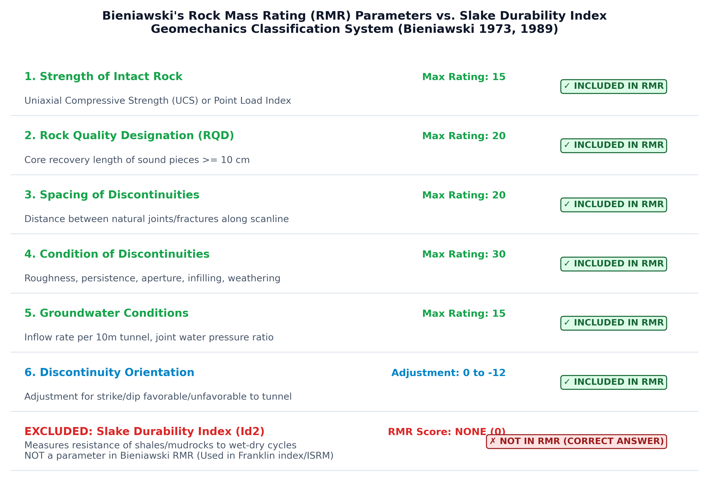

The Rock Mass Rating (RMR) system, also universally known as the Geomechanics Classification, was developed by Z.T. Bieniawski (1973, 1976, 1989). It is one of the most widely utilized empirical design tools in civil and mining engineering for assessing rock mass quality, designing tunnel support systems, and evaluating rock slope and foundation stability.
The calculation of the basic and adjusted RMR value relies strictly upon six specific geotechnical parameters:
In contrast, the Slake Durability Index ($I_{d2}$) (Franklin & Chandra 1972, ISRM 1979) measures the percentage dry weight retained by a sample of rock after two standard cycles of wetting, oven-drying, and mechanical tumbling in a slake drum. It is exclusively an index of weathering susceptibility and slaking degradation for weak, argillaceous rocks (shales, mudstones, marls). It is NOT an input parameter in the RMR formula.
Therefore, the parameter that is NOT considered in the calculation of Rock Mass Rating is (d) Slake durability index.

The total adjusted RMR score is computed as:
| Parameter | Measured Property | Rating Range | Engineering Significance |
|---|---|---|---|
| 1. Strength of Intact Rock ($R_1$) | Point Load Index ($>10 \text{ MPa}$) or Uniaxial Compressive Strength ($>250 \text{ MPa}$) | 0 – 15 | Evaluates intact rock block crushing resistance under applied overburden stresses. |
| 2. Rock Quality Designation ($R_2$) | Percentage of intact core pieces $\ge 10\text{ cm}$ in total drill core run | 3 – 20 | Quantifies rock mass fracturing frequency; $\text{RQD} = 90\text{--}100\%$ gives maximum rating of 20. |
| 3. Spacing of Discontinuities ($R_3$) | Perpendicular distance between joints ($>2\text{ m}$ to $<60\text{ mm}$) | 5 – 20 | Dictates the size of individual interlocking rock blocks within the rock mass. |
| 4. Condition of Discontinuities ($R_4$) | Persistence, aperture, roughness, infilling thickness/type, joint wall weathering | 0 – 30 | Highest single weighted parameter; controls shear strength along potential failure surfaces. |
| 5. Groundwater Conditions ($R_5$) | Completely dry, damp, wet, dripping, or flowing water; or pore pressure ratio | 0 – 15 | Quantifies effective stress reduction and lubrication along joint planes. |
| 6. Orientation Adjustment ($R_6$) | Strike and dip orientation relative to engineering excavation | 0 to -12 (Tunnels) 0 to -25 (Foundations) |
Penalizes unfavorable daylighting of discontinuities dipping into excavations. |
| RMR Value | Rock Class | Rock Quality Description | Cohesion ($c$) | Friction Angle ($\phi$) | Stand-up Time |
|---|---|---|---|---|---|
| 81 – 100 | Class I | Very Good Rock | $> 400\text{ kPa}$ | $> 45^\circ$ | 20 years for 15 m span |
| 61 – 80 | Class II | Good Rock | $300 – 400\text{ kPa}$ | $35^\circ – 45^\circ$ | 1 year for 10 m span |
| 41 – 60 | Class III | Fair Rock | $200 – 300\text{ kPa}$ | $25^\circ – 35^\circ$ | 1 week for 5 m span |
| 21 – 40 | Class IV | Poor Rock | $100 – 200\text{ kPa}$ | $15^\circ – 25^\circ$ | 10 hours for 2.5 m span |
| < 20 | Class V | Very Poor Rock | $ < 100\text{ kPa}$ | $ < 15^\circ$ | 30 minutes for 1 m span |